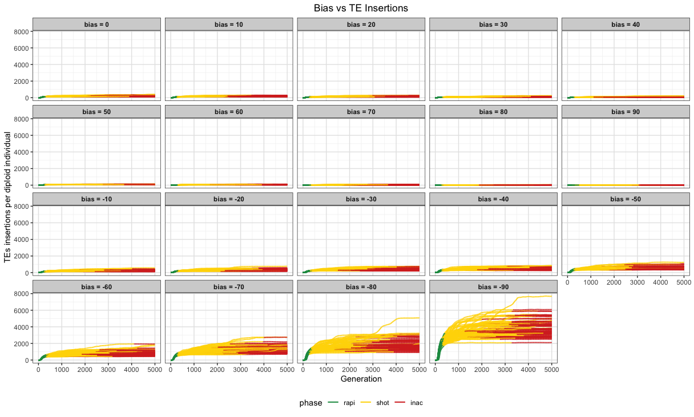
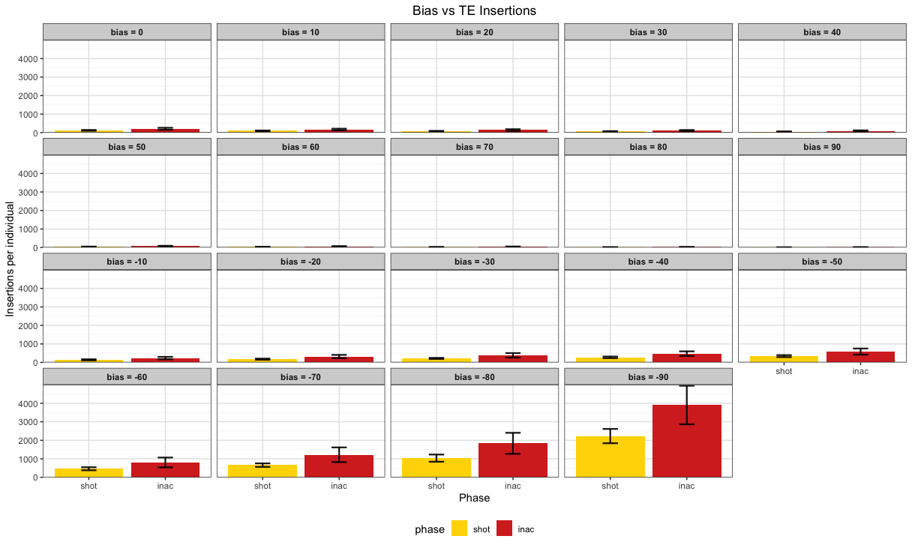
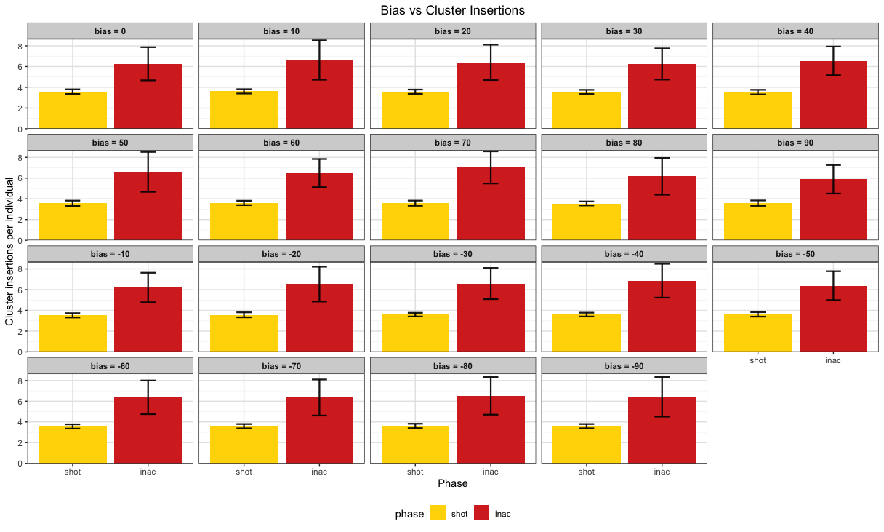
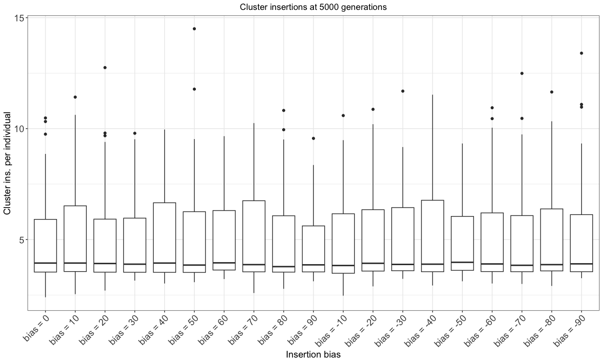

Validation of Insertion Bias
Shashank Pritam
18th April 2021
Introduction
With this simulation we wanted to understand the impact of the insertion bias on the transposable elements invasion dynamics.
Initial conditions:
- A population of 1000, 5 chromosomes of size 10 Mb, 5 piRNA clusters of size 300 Kb and an initial number of TEs in the population equal to 10.
- We used 1000 replicates for the establishment probability simulation. (Part A)
- We used 100 replicates for the other simulations. (Part B)
Part A
Materials & Methods
version: invadego-insertionbias
- seed mb90: 1681416686772742525
- seed mb80: 1681416686774110472
- seed mb70: 1681416686775454804
- seed mb60: 1681416686777197238
- seed mb50: 1681416686800571008
- seed mb40: 1681416686781159100
- seed mb30: 1681416686799564808
- seed mb20: 1681416686789184445
- seed mb10: 1681416686852215098
- seed b0: 1681416686895551778
- seed b10: 1681416686901710885
- seed b20: 1681416686922069349
- seed b30: 1681416686945831086
- seed b40: 1681416686916556559
- seed b50: 1681416686923950537
- seed b60: 1681416686979799130
- seed b70: 1681416686963536390
- seed b80: 1681416687018751364
- seed b90: 1681416687027712625
version: invadego 0.1.3
Commands for the simulation:
tool="./main"
N=1000
gen=500
genome="mb:10,10,10,10,10"
cluster="kb:300,300,300,300,300"
rr="4,4,4,4,4"
rep=1000
u=0.1
steps=500
folder="Simulation-Results/Insertion-Bias/validation_5.1"
for i in {-9..9}; do
i=$(($i * 10))
if (( $i < 0 )); then
sampleid="mb$(($i * -1))"
else
sampleid="b$(($i))"
fi
basepop="10($i)"
output_file="$folder/$(date +%Y_%m_%d)_simulation_0_m100_500gen_basepop_$i"
command="$tool --N $N --gen $gen --genome $genome --cluster $cluster --rr $rr --rep $rep --u $u --basepop \"$basepop\" --steps $steps --sampleid $sampleid > $output_file"
echo "Running command: $command"
eval "$command" &
done
# wait for all simulations to finish
wait
# concatenate output files with system date
for i in {-9..9}; do
i=$(($i * 10))
cat "$folder"/*_simulation_* | grep -v "^Invade" | grep -v "^#" > "$folder"/"$(date +%Y_%m_%d)"_Validation_5_bias
doneVisualization in R
Setting the environment
library(tidyverse)
library(RColorBrewer)
library(ggpubr)
theme_set(theme_bw())Visualization:
# Define palette
p <- c("#1a9850", "#ffd700", "#d73027")
# Read data and set column names
df0 <- read.table("2023_04_16_Validation_5_bias", fill = TRUE, sep = "\t")
names(df0) <- c("rep", "gen", "popstat", "spacer_1", "fwte", "avw", "min_w", "avtes", "avpopfreq",
"fixed", "spacer_2", "phase", "fwcli", "avcli", "fixcli", "spacer_3",
"avbias", "3tot", "3cluster", "spacer_4", "sampleid")
# Filter and select columns
df00 <- subset(df0, gen != 0)
df00 <- select(df00, -c(22))
# Calculate statistics
df0_stat <- df00 %>%
group_by(sampleid) %>%
summarize(fail = sum(popstat == "fail-0"),
success = sum(popstat == "ok"),
total = success + fail,
ok_rate = success/total)
# Modify sampleid values
df0_stat <- df0_stat %>%
mutate(sampleid = str_replace_all(sampleid, c("mb90" = "-90", "mb80" = "-80", "mb70" = "-70", "mb60" = "-60",
"mb50" = "-50", "mb40" = "-40", "mb30" = "-30", "mb20" = "-20",
"mb10" = "-10", "b90" = "90", "b80" = "80", "b70" = "70",
"b60" = "60", "b50" = "50", "b40" = "40", "b30" = "30",
"b20" = "20", "b10" = "10", "b0" = "0")))
# Convert sampleid to integer and sort
df0_stat$sampleid <- as.integer(df0_stat$sampleid)
df0_stat <- df0_stat[order(df0_stat$sampleid),]
# Create and plot the graph
g0 <- ggplot(data = df0_stat, aes(x = as.factor(sampleid), y = ok_rate, fill = ok_rate)) +
geom_col(show.legend = FALSE) +
geom_hline(yintercept = 0.8, linetype = "dashed", color = "red") +
scale_y_continuous(limits = c(0, 1), expand = expansion(mult = c(0, 0)), breaks = seq(0, 1, 0.2),
labels = scales::percent) +
scale_x_discrete(labels = setNames(c("-90", "-80", "-70", "-60", "-50", "-40", "-30", "-20", "-10", "0",
"10", "20", "30", "40", "50", "60", "70", "80", "90"),
unique(df0_stat$sampleid))) +
scale_fill_gradientn(colors = RColorBrewer::brewer.pal(3, "Dark2")) +
xlab("Insertion Bias") +
ylab("Successful Invasions (%)") +
theme_minimal() +
theme(text = element_text(size = 12))
plot(g0)
Part B
Materials & Methods
version: invadego-insertionbias
- seed bm90:1681703746948243382
- seed bm80:1681703746967971953
- seed bm70:1681703746971553379
- seed bm60:1681703746982043927
- seed bm50:1681703746966638661
- seed bm40:1681703746968163967
- seed bm30:1681703746966865535
- seed bm20:1681703746967140988
- seed bm10:1681703746968185216
- seed b0:1681703746967266047
- seed b10:1681703746966943511
- seed b20:1681703746967467361
- seed b30:1681703746968281172
- seed b40:1681703746966595814
- seed b50:1681703746965872050
- seed b60:1681703746993945683
- seed b70:1681703746994770216
- seed b80:1681703747014417508
- seed b90:1681703747037138734
version: invadego 0.1.3
Commands for the simulation:
tool="./main"
N=1000
gen=5000
genome="mb:10,10,10,10,10"
cluster="kb:300,300,300,300,300"
rr="4,4,4,4,4"
rep=100
u=0.1
steps=20
folder="Simulation-Results/Insertion-Bias/validation_5.2"
for i in {-9..9}; do
i=$(($i * 10))
if (( $i < 0 )); then
sampleid="bm$(($i * -1))"
else
sampleid="b$(($i))"
fi
basepop="10($i)"
output_file="$folder/$(date +%Y_%m_%d)_simulation_0_${sampleid}"
command="$tool --N $N --gen $gen --genome $genome --cluster $cluster --rr $rr --rep $rep --u $u --basepop \"$basepop\" --steps $steps --sampleid $sampleid > $output_file"
echo "Running command: $command"
eval "$command" &
done
# wait for all simulations to finish
wait
# concatenate output files with system date
cat $folder/$*simulation_0_* | grep -v "^Invade" | grep -v "^#" > $folder/$(date +%Y_%m_%d)_Simulation_0_explorationVisualization in R
Setting the environment
library(tidyverse)
library(RColorBrewer)
library(ggpubr)
theme_set(theme_bw())Visualization:
library(tidyverse)
library(RColorBrewer)
library(ggpubr)
theme_set(theme_bw())
p <- c("#1a9850", "#ffd700", "#d73027")
df <- read.table("2023_04_18_simulation_5_2_bias", fill = TRUE, sep = "\t")
names(df) <- c("rep", "gen", "popstat", "spacer_1", "fwte", "avw", "min_w", "avtes", "avpopfreq",
"fixed", "spacer_2", "phase", "fwcli", "avcli", "fixcli", "spacer_3",
"avbias", "3tot", "3cluster", "spacer_4", "sampleid")
df$phase <- factor(df$phase, levels = c("rapi", "trig", "shot", "inac"))
df$sampleid <- factor(df$sampleid, levels = c("b0", "b10", "b20", "b30", "b40", "b50", "b60", "b70", "b80", "b90", "bm10", "bm20", "bm30", "bm40", "bm50", "bm60", "bm70", "bm80", "bm90"))
g <- ggplot() +
geom_line(data = df, aes(x = gen, y = avtes, group = rep, color = phase), alpha = 1, linewidth = 0.7) +
xlab("Generation") +
ylab("TEs insertions per diploid individual") +
theme(legend.position = "bottom",
plot.title = element_text(hjust = 0.5),
panel.grid.major = element_line(colour = "gray90"),
panel.grid.minor = element_line(colour = "gray95"),
strip.background = element_rect(fill = "lightgrey"),
strip.text = element_text(face = "bold")) +
ggtitle("Bias vs TE Insertions") +
scale_colour_manual(values = p) +
facet_wrap(~sampleid, labeller = labeller(sampleid =
c("b0" = "bias = 0",
"b10" = "bias = 10",
"b20" = "bias = 20",
"b30" = "bias = 30",
"b40" = "bias = 40",
"b50" = "bias = 50",
"b60" = "bias = 60",
"b70" = "bias = 70",
"b80" = "bias = 80",
"b90" = "bias = 90",
"bm10" = "bias = -10",
"bm20" = "bias = -20",
"bm30" = "bias = -30",
"bm40" = "bias = -40",
"bm50" = "bias = -50",
"bm60" = "bias = -60",
"bm70" = "bias = -70",
"bm80" = "bias = -80",
"bm90" = "bias = -90")))
plot(g)
# Divide in shot and inact phases
df1 <- subset(df, phase %in% c("shot", "inac"))
df2 <- data.frame()
# New dataframe with only the first shotgun & the first inactive phase of each replicate
repcheck <- 1
x <- 1
y <- 1
while (x < nrow(df1)) {
if (repcheck != df1[x, 1]) {
y <- 1
}
if (y == 1) {
if (df1[x, 12] == "shot") {
df2 <- rbind(df2, df1[x,])
y <- 2
repcheck <- df1[x, 1]
}
}
if (y == 2) {
if (df1[x, 12] == "inac") {
df2 <- rbind(df2, df1[x,])
y <- 1
}
}
x <- x + 1
}
# Summary statistics
df2 <- select(df2, -c(22))
df_count <- df2 %>%
dplyr::count(sampleid, phase)
df_summary <- df2 %>%
dplyr::group_by(sampleid, phase) %>%
dplyr::summarize(av_fwcli = mean(fwcli), sd_fwcli = sd(fwcli),
av_cli = mean(avcli), sd_cli = sd(avcli), cv_cli_percent = sd(avcli) / mean(avcli),
av_tes = mean(avtes), sd_tes = sd(avtes), cv_tes_percent = sd(avtes) / mean(avtes),
length_previous_phase = mean(gen),
sd_gen_phases = sd(gen))
df_summary <- cbind(df_count$n, df_summary)
colnames(df_summary)[1] <- "n"
# CI 95%: z* sd/sqrt(population)
df_summary$ci_fwcli <- qt(0.975, df = df_summary$n - 1) * (df_summary$sd_fwcli / sqrt(df_summary$n))
df_summary$ci_cli <- qt(0.975, df = df_summary$n - 1) * (df_summary$sd_cli / sqrt(df_summary$n))
df_summary$ci_tes <- qt(0.975, df = df_summary$n - 1) * (df_summary$sd_tes / sqrt(df_summary$n))
# Average TE insertions per individual shot and inac phases
g_avtes <- ggplot(df_summary, aes(x = phase, y = av_tes, fill = phase)) +
geom_bar(stat = "identity") +
geom_errorbar(aes(x = phase, ymin = av_tes - sd_tes, ymax = av_tes + sd_tes), width = 0.2, colour = "black", alpha = 0.9, size = 0.8) +
ylab("Insertions per individual") +
xlab("Phase") +
theme(legend.position = "bottom",
plot.title = element_text(hjust = 0.5),
panel.grid.major = element_line(colour = "gray90"),
panel.grid.minor = element_line(colour = "gray95"),
strip.background = element_rect(fill = "lightgrey"),
strip.text = element_text(face = "bold")) +
ggtitle("Bias vs TE Insertions") +
scale_y_continuous(expand = expansion(mult = c(0, 0.01))) +
scale_fill_manual(values = c("#ffd700", "#d73027")) +
facet_wrap(~sampleid, labeller = labeller(sampleid =
c("b0" = "bias = 0",
"b10" = "bias = 10",
"b20" = "bias = 20",
"b30" = "bias = 30",
"b40" = "bias = 40",
"b50" = "bias = 50",
"b60" = "bias = 60",
"b70" = "bias = 70",
"b80" = "bias = 80",
"b90" = "bias = 90",
"bm10" = "bias = -10",
"bm20" = "bias = -20",
"bm30" = "bias = -30",
"bm40" = "bias = -40",
"bm50" = "bias = -50",
"bm60" = "bias = -60",
"bm70" = "bias = -70",
"bm80" = "bias = -80",
"bm90" = "bias = -90")))
plot(g_avtes)
# Average cluster insertions per individual shot and inac phases
g_avcli <- ggplot(df_summary, aes(x = phase, y = av_cli, fill = phase)) +
geom_bar(stat = "identity") +
geom_errorbar(aes(x = phase, ymin = av_cli - sd_cli, ymax = av_cli + sd_cli), width = 0.2, colour = "black", alpha = 0.9, size = 0.8) +
ylab("Cluster insertions per individual") +
xlab("Phase") +
theme(legend.position = "bottom",
plot.title = element_text(hjust = 0.5),
panel.grid.major = element_line(colour = "gray90"),
panel.grid.minor = element_line(colour = "gray95"),
strip.background = element_rect(fill = "lightgrey"),
strip.text = element_text(face = "bold")) +
ggtitle("Bias vs Cluster Insertions") +
scale_y_continuous(expand = expansion(mult = c(0, 0.01))) +
scale_fill_manual(values = c("#ffd700", "#d73027")) +
facet_wrap(~sampleid, labeller = labeller(sampleid =
c("b0" = "bias = 0",
"b10" = "bias = 10",
"b20" = "bias = 20",
"b30" = "bias = 30",
"b40" = "bias = 40",
"b50" = "bias = 50",
"b60" = "bias = 60",
"b70" = "bias = 70",
"b80" = "bias = 80",
"b90" = "bias = 90",
"bm10" = "bias = -10",
"bm20" = "bias = -20",
"bm30" = "bias = -30",
"bm40" = "bias = -40",
"bm50" = "bias = -50",
"bm60" = "bias = -60",
"bm70" = "bias = -70",
"bm80" = "bias = -80",
"bm90" = "bias = -90")))
plot(g_avcli)
g_bar_av_TEs <- ggplot(df2, aes(x = sampleid, y = avtes)) +
geom_boxplot() +
ggtitle("Insertions at 5000 generations") +
ylab("Ins. per individual") +
xlab("Insertion bias") +
theme(legend.position = "none",
axis.text.x = element_text(size = 14, angle = 45, hjust = 1),
axis.text.y = element_text(size = 14),
axis.title.x = element_text(size = 14),
axis.title.y = element_text(size = 14),
strip.text = element_text(size = 14),
plot.title = element_text(hjust = 0.5)) +
scale_x_discrete(labels = c("b0" = "bias = 0",
"b10" = "bias = 10",
"b20" = "bias = 20",
"b30" = "bias = 30",
"b40" = "bias = 40",
"b50" = "bias = 50",
"b60" = "bias = 60",
"b70" = "bias = 70",
"b80" = "bias = 80",
"b90" = "bias = 90",
"bm10" = "bias = -10",
"bm20" = "bias = -20",
"bm30" = "bias = -30",
"bm40" = "bias = -40",
"bm50" = "bias = -50",
"bm60" = "bias = -60",
"bm70" = "bias = -70",
"bm80" = "bias = -80",
"bm90" = "bias = -90"))
plot(g_bar_av_TEs)
g_bar_av_cli <- ggplot(df2, aes(x = sampleid, y = avcli)) +
geom_boxplot() +
ggtitle("Cluster insertions at 5000 generations") +
ylab("Cluster ins. per individual") +
xlab("Insertion bias") +
theme(legend.position = "none",
axis.text.x = element_text(size = 14, angle = 45, hjust = 1),
axis.text.y = element_text(size = 14),
axis.title.x = element_text(size = 14),
axis.title.y = element_text(size = 14),
strip.text = element_text(size = 14),
plot.title = element_text(hjust = 0.5)) +
scale_x_discrete(labels = c("b0" = "bias = 0",
"b10" = "bias = 10",
"b20" = "bias = 20",
"b30" = "bias = 30",
"b40" = "bias = 40",
"b50" = "bias = 50",
"b60" = "bias = 60",
"b70" = "bias = 70",
"b80" = "bias = 80",
"b90" = "bias = 90",
"bm10" = "bias = -10",
"bm20" = "bias = -20",
"bm30" = "bias = -30",
"bm40" = "bias = -40",
"bm50" = "bias = -50",
"bm60" = "bias = -60",
"bm70" = "bias = -70",
"bm80" = "bias = -80",
"bm90" = "bias = -90"))
plot(g_bar_av_cli)
Conclusions
The insertion bias affects the probability of a successful invasion establishment.
The average number of insertions are affected by insertion bias.
The average number of cluster insertions is not affected by the insertion bias.